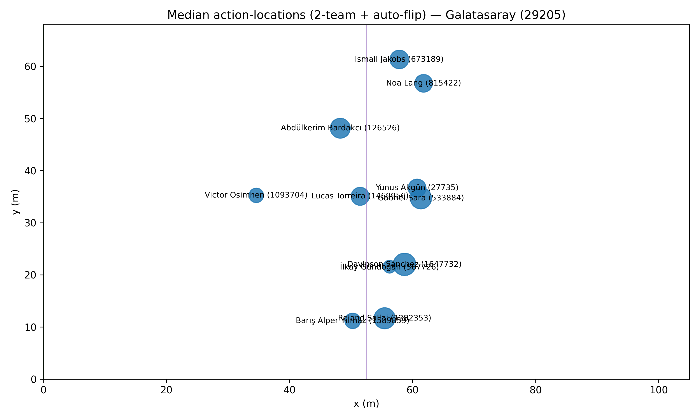
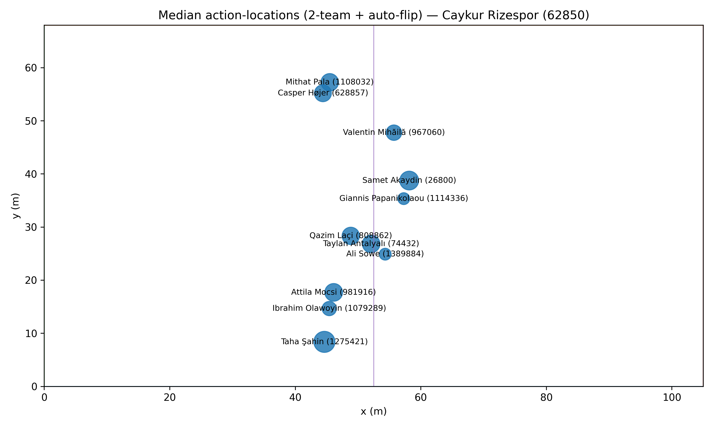

HPFA positions_v2_auto — 2-team filter + auto flip
Caykur Rizespor (62850)
: flip_second_half=True (m1=52.9, m2=50.4, d0=2.5, d1=1.8)
Galatasaray (29205)
: flip_second_half=True (m1=58.6, m2=51.7, d0=6.9, d1=5.2)
Median positions — Galatasaray (29205)

Median positions — Caykur Rizespor (62850)
